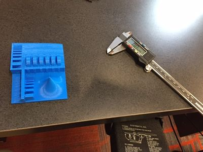
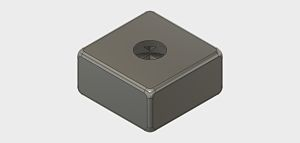
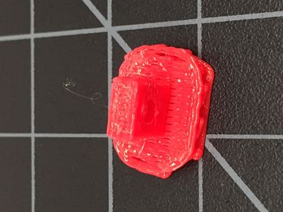

This week the assignments are:
1. What are the design rules and limitations of the 3D printers.
2. Print the Arduino case.
3. Design and print an object that could only be printed additively.
4. 3D scan and print an object.
5. Make a paper mask using 3D scanning.
First of all, the limitations of Makerbot Replicator Gen 5. Using the tolerance test, I ascertained that the minimum width for printing is about 0.0635 inches for the pinnacle. However, in terms of drilling holes or construction solids, it can go down to about 0.0355 inches.
For the arduino case, I designed it to be the exact dimensions. However, the outputs could not fit in because it was too exact.
The original file is here.
My design for the object that could only be printed additively is very simple. The most prominent feature that additive printing has but subtractive has not is the printing of hollowed objects. Thus, my design is just a box with a rectangular prism cut out inside and a hole drilled from the surface.
The final product is a bit too small, but the basic idea of drilling holes and inside hollow could be clearly seen.
The original file is here.